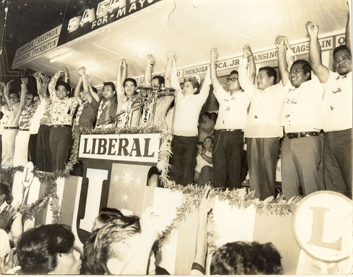
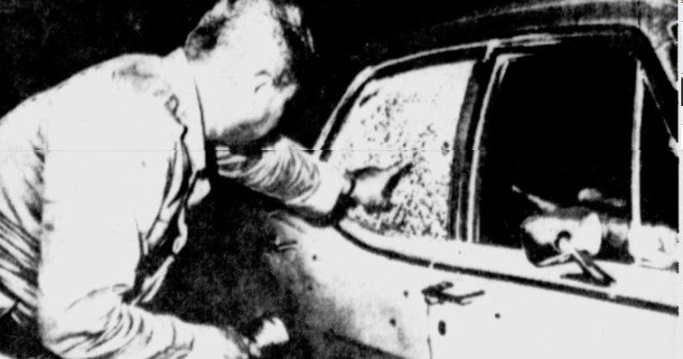

Ferdinand Marcos is the 10th president of the Philippines. His term lasted for 20 years and he is known for his declaration of martial law in our country during his term. Before we dig deeper about this, let us know first what is martial law.
Martial law is the replacement of civil rule by military rule. During this time, curfews, the dispensation of military tribunal rulings on civilians, and the suspension of the privilege of the writ of habeas corpus is imposed. If you do not know, the writ of habeas corpus is a citizen’s protection against unlawful imprisonment. Which means, you can be charged of something that you did not really do just because the military suspected you.
Now, we go back to 1972.
Marcos issued Proclamation 1081 placing the country under Martial Law.
He then appeared on television at 7:15 p.m. on September 23, 1972 to announce that he had placed the “entire
Philippines under Martial Law”.
But a week before the actual declaration of Martial Law, a number of people had already received information that Marcos had drawn up a plan to completely take over the government and gain absolute rule. Senator Benigno S. Aquino Jr., during a September 13, 1972 privilege speech, exposed what was known as “Oplan Sagittarius.”

The Senator said he had received a top-secret military plan given by Marcos himself to place Metro Manila and outlying areas under the control of the Philippine Constabulary as a prelude to Martial Law. Marcos was going to use a series of bombings in Metro Manila, including the 1971 Plaza Miranda bombing, as a justification for his takeover and subsequent authoritarian rule.

Evening of Friday, September 22, 1972, the convoy of Secretary of Defense Juan Ponce Enrile was ambushed in Wack-Wack as he was on his way home before 9 p.m. when a car opened fire at his convoy and sped away. This incident was used to justify the imposition of martial law. But later on 1986, Enrile revealed that this ambush was staged by Marcos.